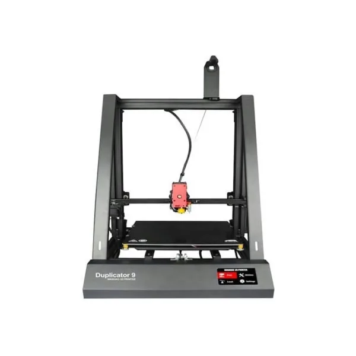

Wanhao Duplicator 9 MK2 ファームウェア
2 代目の Duplicator 9 です。両側に斜めの補強リブ、プリントヘッドまで黒い丸型のデータケーブル、BLTouch プローブ、上部にスプールホルダーがあります。
Wanhao はさらに、キャリッジを 4 ローラーに変え、400 と 500 ではダブルレールの Y 軸とより太いベルトを、300 と 400 では両面ベッドを採用しました。Y 軸モーターは背面にあり、このビルドは Wanhao の V1.1.2 ファームウェアと同じ向きに Y 軸を回します。

ダウンロード
| サイズ | 造形サイズ | ファームウェア |
|---|---|---|
| D9/300 | 300 × 300 × 400 mm | D9_MK2_300.hex |
| D9/400 | 400 × 400 × 400 mm | D9_MK2_400.hex |
| D9/500 | 500 × 500 × 500 mm | D9_MK2_500.hex |
お使いのサイズのファイルを選んでください。ヘッドも MK3 仕様にアップグレードした MK2 では、MK3 ファームウェアを使ってください。そのあと DGUS Reloaded でタッチスクリーンを書き換えます。
Wanhao の資料
- D9 MK2 スタートガイド（英語）。
- MK1 から MK2 への 12 の改良点（Wanhao 作成）。
Wanhao 純正ファームウェア
Wanhao の V1.1.2（2018 年 10 月。500 は 2019 年 7 月に V1.1.2.1 として再ビルド）と、Wanhao の MK2 画面用ファームウェア。
| サイズ | メインボード | 画面 |
|---|---|---|
| D9/300 | D9-300-BLTOUCH-FD_V1.1.2.hex | DWIN_SET_MK2.zip |
| D9/400 | D9-400-BLTOUCH-FD_V1.1.2.hex | DWIN_SET_MK2.zip |
| D9/500 | D9-500-BLTOUCH-FD_V1.1.2.1.hex | DWIN_SET_MK2.zip |
Wanhao のバイナリから読み出した設定：extract.md。